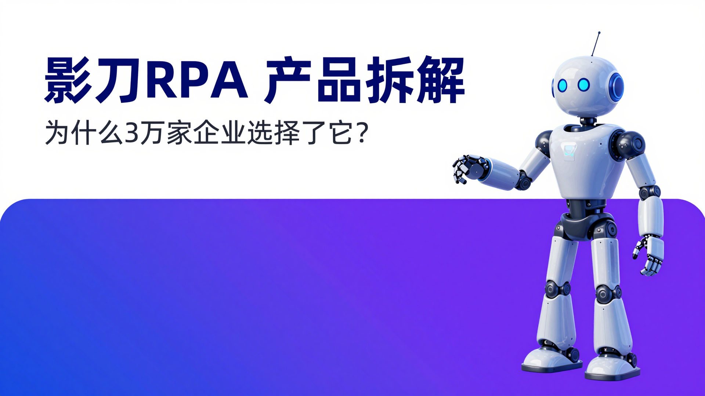
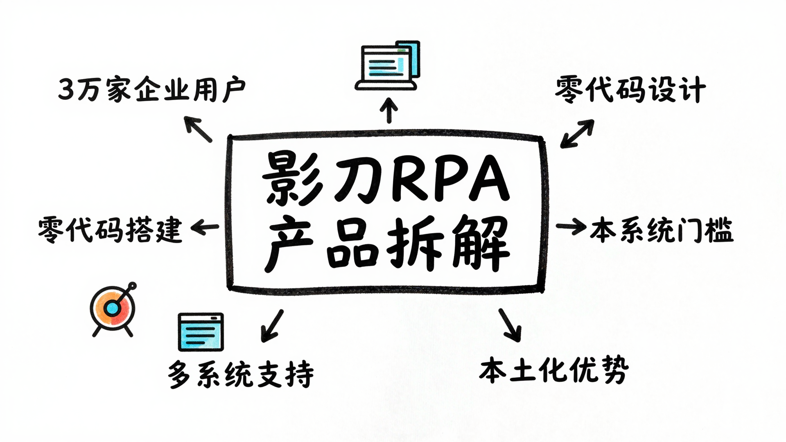

最近在研究 RPA（机器人流程自动化）工具时，发现了一个有意思的现象。
国内 RPA 市场玩家不少，UiPath、来也、弘玑...但有一款国产工具特别引人注意：影刀RPA。
3万家企业用户，电商领域累计运行超过3亿小时，这些数字背后，它做对了什么？
作为一个产品经理，我今天想从产品设计角度，拆解一下影刀RPA。
先快速介绍一下。
影刀RPA 是一款国产的机器人流程自动化工具，定位很清晰："让软件机器人代替人做重复性工作"。
核心数据：
- 3万家企业用户
- 电商领域累计运行3亿+小时
- 支持 Windows、Mac、Android 多系统
- 覆盖电商、医疗、金融、制造、零售等行业
它的产品口号我很喜欢："我们创造软件机器人，让人不需要像机器一样工作。"
这句话抓住了 RPA 的本质：把人从机械重复的工作中解放出来。
从产品角度看，影刀RPA 解决了三个核心痛点：
任何公司都有大量机械重复的工作：
- 电商：批量上架商品、自动回复客户、订单处理
- 财务：发票录入、报表生成、银行对账
- 人事：简历筛选、入职办理、社保申报
这些工作有什么特点？
- 规则明确
- 重复性强
- 容易出错
- 消耗大量人力
影刀RPA 的解决方案是：用软件机器人模拟人工操作，7×24小时不间断工作。
传统 RPA 工具（比如 UiPath）虽然强大，但学习曲线陡峭：
- 需要编程基础
- 配置复杂
- 动辄几万到几十万的年费
这导致一个问题：真正需要 RPA 的业务人员，用不起来。
影刀RPA 的洞察是：把 RPA 做成"人人可用"的工具。
UiPath 这类国际大厂，在中国市场有个天然劣势：本土化不够。
比如：
- 界面是英文的
- 文档全是英文
- 对国产软件支持不好
- 价格太贵
影刀RPA 作为国产工具，天然占据本土化优势。
从产品功能设计来看，影刀RPA 做对了三件事：
这是影刀RPA 最聪明的设计决策。
传统的 RPA 需要 Python 或 C# 编程，而影刀采用积木式拖拽：
这意味着什么？
- 业务人员自己就能搭建机器人
- 不需要依赖 IT 部门
- 从需求到落地，周期从几周缩短到几天
从产品视角看，这抓住了关键用户场景：真正懂业务的人，往往不会写代码。
影刀RPA 的一个杀手锏功能是：影刀AI —— 聊天式搭建自动化流程。
这个设计很有意思：
传统方式：我需要学习 RPA 工具，理解各种组件的含义，然后拖拽搭建。
影刀AI 方式：我直接说"我要自动抓取电商订单数据"，它就帮我生成流程。
这背后是 LLM（大语言模型）的能力：
- 理解自然语言需求
- 自动生成自动化流程
- 降低学习成本
从产品角度看，这是"降低门槛"的极致体现：连拖拽都不需要，直接对话。
影刀RPA 支持三种操作系统：Windows、Mac、Android。
为什么这个很重要？
RPA 的核心是"模拟人工操作"，而不同操作系统的底层接口完全不同。
传统 RPA 工具往往只支持 Windows，但现在的办公场景越来越多元化：
- 用 Mac 做设计的
- 用 Android 手机处理业务的
- 跨设备协作的
影刀RPA 的多系统支持，让一个机器人可以在不同设备上运行，这是一个重要的产品差异化点。
作为产品经理，我觉得影刀RPA 有几个设计思路值得借鉴：
很多产品陷入"功能军备竞赛"，不断堆砌新功能。
但影刀RPA 的核心策略是：降低使用门槛。
每一步都在降低门槛，让更多人能用起来。
我的观点：在 B2B 软件，易用性往往比功能丰富度更重要。
影刀RPA 的目标用户很清晰：业务人员，而不是 IT 专业人士。
为什么？
- 业务人员最懂痛点
- 业务人员最需要自动化
- 但业务人员往往不会写代码
抓住这个用户群，就抓住了真正的需求源头。
在国际巨头面前，国产软件的突破口是什么？
影刀RPA 的答案是：深度本土化。
在 B2B 领域，本土化是护城河。
影刀RPA 不是功能最强大的 RPA 工具，但它可能是最适合中国企业的 RPA 工具之一。
它的核心竞争力，我认为不是技术，而是产品定位的精准：
当然，它也有局限性：
- 对于复杂场景，可能不如 UiPath 灵活
- AI 辅助还在早期，准确性有待提升
- 企业级功能（如权限管理、审计日志）可能不如国际大厂
但对于大部分中小企业的自动化需求，影刀RPA 已经够用了。
拆解完影刀RPA，我的核心观点是：
好的产品设计，不是比拼功能列表，而是精准定位用户场景，降低使用门槛。
影刀RPA 做对的事情：
- 找对了用户：业务人员，而非 IT 人员
- 降低门槛：从编程到拖拽到对话
- 深度本土化：针对中国市场优化
如果你也在考虑引入 RPA 工具，我的建议是：
你对 RPA 工具有什么使用经验？欢迎在评论区聊聊。
我是[你的名字]，一个在 AI 产品路上探索的产品经理。如果觉得有帮助，欢迎关注交流。